MCP
MCP ADK
ADK Python
Python
 Google Developer GroupBangkok · DevFest 2026
Google Developer GroupBangkok · DevFest 2026
Agenda
- 01The ADK tool spectrumFunction tools, built-ins, OpenAPI & long-running ops
- 02Model Context ProtocolUSB-C for AI: architecture and transports
- 03MCPToolset in ADKLocal, remote, filtering, exposing tools & memory
- 04Production toolingUser OAuth, Cloud Run deployment & security
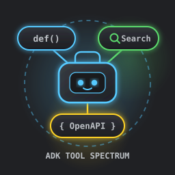
The ADK
tool spectrum
Function tools, built-ins,
OpenAPI & long-running ops
Docstrings and type hints are the API contract
def get_flight_status(
flight_no: str,
date: str,
) -> dict:
"""Look up real-time flight status.
Use when the user asks if a flight is on time,
delayed, or which gate it departs from.
Args:
flight_no: IATA flight code, e.g. 'TG640'.
date: Departure date in YYYY-MM-DD format.
Returns:
dict with 'status', 'gate', and 'eta'.
"""
...

What Gemini sees
FunctionDeclaration.Docstring = prompt
YYYY-MM-DD), and what the keys mean.Strict types
str, int, bool, list[str]). Avoid Any or untyped **kwargs.Plain Python functions, structured dict results
from google.adk.agents import LlmAgent
def get_order_status(order_id: str) -> dict:
"""Return shipping status for a customer order."""
order = db.find_order(order_id)
if not order:
return {
"status": "error",
"error_message": f"Order {order_id} not found.",
}
return {"status": "success", "state": order.state, "eta": order.eta}
support_agent = LlmAgent(
name="support_agent",
model="gemini-2.5-flash",
instruction="Help customers track orders using tools.",
tools=[get_order_status], # auto-wrapped as FunctionTool
)
Zero boilerplate
def or async def into tools=[]. ADK wraps it in FunctionTool automatically.Return a dict
"status" key (success / error) so Gemini knows whether to answer, retry or ask the user.Need state or auth?
tool_context: ToolContext parameter — ADK injects it and hides it from Gemini.Ground and compute out of the box
google_search
Live web grounding backed by Google Search with citations and grounding metadata.
from google.adk.tools import google_search
BuiltInCodeExecutor
Sandboxed Python execution inside Gemini for math, CSV analysis and charts.
code_executor=BuiltInCodeExecutor()

VertexAiSearchTool
Enterprise RAG over your private Vertex AI Search data stores and PDFs.
VertexAiSearchTool(data_store_id=...)
AgentTool.Import OpenAPI specs and third-party tools
from google.adk.tools.openapi_tool import OpenAPIToolset
petstore_tools = OpenAPIToolset(
spec_str=openapi_yaml,
spec_str_type="yaml",
# Optional: filter which operations to expose
tool_filter=["listPets", "getPetById"],
)
agent = LlmAgent(
name="petstore_agent",
model="gemini-2.5-flash",
tools=[petstore_tools],
)
OpenAPIToolset
LangChain & CrewAI
LangchainTool(tool) or CrewaiTool(tool) without rewriting.AgentTool
LongRunningFunctionTool for slow or gated tasks
Gemini invokes request_approval()
Tool returns ticket ID & status: pending
ADK yields to UI / human or background job
Client sends final FunctionResponse
from google.adk.tools import LongRunningFunctionTool
def ask_for_approval(amount: float, reason: str) -> dict:
"""Create a reimbursement ticket awaiting manager sign-off."""
return {"status": "pending", "ticket_id": create_ticket(amount, reason)}
approval_tool = LongRunningFunctionTool(func=ask_for_approval)
When to use it
Manager approvals, payment confirmations, or cloud batch jobs that take minutes — without blocking the agent's event loop.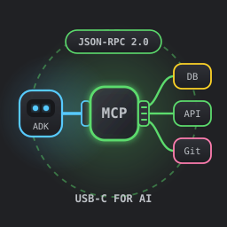
Model Context
Protocol
The open standard connecting
agents to external systems
From N × M custom glue to N + M with MCP
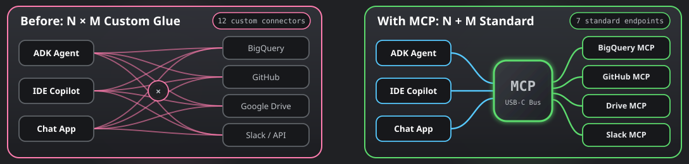
ADK
MCP Hub
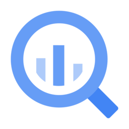
BigQuery GitHub
GitHub
 Google Drive
Slack
Jira
Google Drive
Slack
Jira
Host, Client and Server: who does what
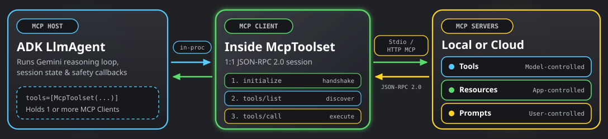
Host: ADK LlmAgent
Client: McpToolset
Model-controlled Tools
Cloud / Local Servers
Choose the transport that fits your deployment
| Transport | Where it runs | ADK params class | Best for |
|---|---|---|---|
Stdio |
Local subprocess | StdioConnectionParams |
Local dev, CLI tools, filesystem/git servers spawned via npx or uvx. Zero open ports. |
Streamable HTTP |
Remote / Cloud | StreamableHTTPConnectionParams |
Recommended for production. Single HTTP endpoint, stateless or stateful, works cleanly on Cloud Run & load balancers. |
SSE (Legacy) |
Remote / Cloud | SseConnectionParams |
Older MCP servers using dual HTTP POST + SSE streams. Supported for backward compatibility. |
Stdio on your laptop, and Streamable HTTP for anything deployed to the cloud.How ADK discovers and executes an MCP tool
McpToolset connects & negotiates protocol capabilities.
Fetches JSON schemas, applies tool_filter, wraps as ADK tools.
Model sees tool declarations & emits a FunctionCall.
ADK forwards args to server & feeds the result back to Gemini.
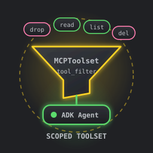
MCPToolset
in ADK
Local & remote servers, filtering,
exposing tools & memory
Connect locally with StdioConnectionParams
from google.adk.agents import LlmAgent
from google.adk.tools.mcp_tool import McpToolset
from google.adk.tools.mcp_tool.mcp_session_manager import (
StdioConnectionParams,
)
from mcp import StdioServerParameters
fs_tools = McpToolset(
connection_params=StdioConnectionParams(
server_params=StdioServerParameters(
command="npx",
args=["-y", "@modelcontextprotocol/server-filesystem",
"/Users/me/workspace"],
),
timeout=30.0,
),
)
root_agent = LlmAgent(
model="gemini-2.5-flash",
name="file_assistant",
instruction="Help the user explore files in /Users/me/workspace.",
tools=[fs_tools],
)
Managed lifecycle
adk web / Runner spawns the subprocess and closes it cleanly on shutdown.Any runtime
npx), Python (uvx / python) or compiled Go/Rust binaries.Set timeout
30.0s) when npx downloads packages on first run.Connect to cloud servers with StreamableHTTP
from google.adk.agents import LlmAgent
from google.adk.tools.mcp_tool import McpToolset
from google.adk.tools.mcp_tool.mcp_session_manager import (
StreamableHTTPConnectionParams,
)
bq_mcp = McpToolset(
connection_params=StreamableHTTPConnectionParams(
url="https://bq-mcp-server.run.app/mcp",
headers={"Authorization": f"Bearer {SERVICE_TOKEN}"},
timeout=30.0,
),
)
root_agent = LlmAgent(
model="gemini-2.5-flash",
name="analytics_agent",
instruction="Answer business questions using BigQuery tools.",
tools=[bq_mcp],
)

Cloud-ready

Static vs dynamic headers
headers={...} for static keys, or header_provider for per-user OAuth tokens.Multiple servers
McpToolset instances in tools=[] alongside custom Python tools.Scope what the agent sees with tool_filter
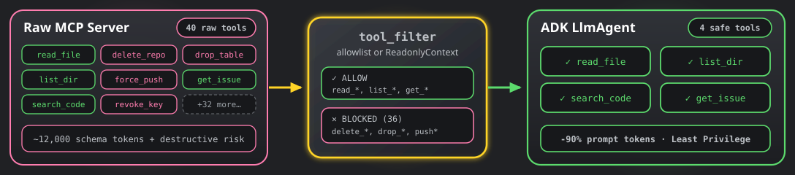
# 1) Static allowlist — simplest & safest
read_only_mcp = McpToolset(
connection_params=conn_params,
tool_filter=["read_file", "list_dir", "search_code", "get_issue"],
)
# 2) Dynamic predicate using ReadonlyContext
def role_based_filter(tool, readonly_context) -> bool:
if readonly_context.state.get("user:role") == "admin":
return True
return not tool.name.startswith(("delete_", "drop_", "force_"))
Least privilege
Per-user predicates
user:role in ReadonlyContext.Expose ADK tools as an MCP server
import json
from mcp import types as mcp_types
from mcp.server.lowlevel import Server
from google.adk.tools.function_tool import FunctionTool
from google.adk.tools.mcp_tool.conversion_utils import (
adk_to_mcp_tool_type,
)
adk_tool = FunctionTool(get_order_status)
app = Server("orders-mcp-server")
@app.list_tools()
async def list_tools() -> list[mcp_types.Tool]:
return [adk_to_mcp_tool_type(adk_tool)]
@app.call_tool()
async def call_tool(name: str, arguments: dict):
result = await adk_tool.run_async(args=arguments, tool_context=None)
return [mcp_types.TextContent(type="text", text=json.dumps(result))]
One-line conversion
adk_to_mcp_tool_type() converts any ADK tool's schema into a valid MCP Tool.Reuse everywhere
Single source of truth
Combine live MCP tools with ADK Memory
ADK Long-Term Memory
PreloadMemoryTool / load_memory recalls user preferences, past tickets & decisions across sessions.
LlmAgent
Fuses personal context + live facts
Live MCP Servers
McpToolset queries real-time data from BigQuery, GitHub, Slack or internal APIs.
agent = LlmAgent(
model="gemini-2.5-flash",
name="personal_ops_agent",
tools=[load_memory, github_mcp, bigquery_mcp], # memory + live MCP together
)
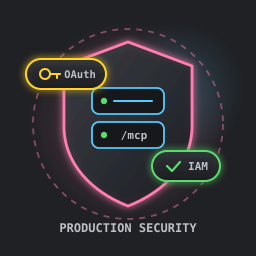
Production
tooling
Pass-through OAuth, Cloud Run
deployment and security
Pass through user OAuth — avoid god-mode keys
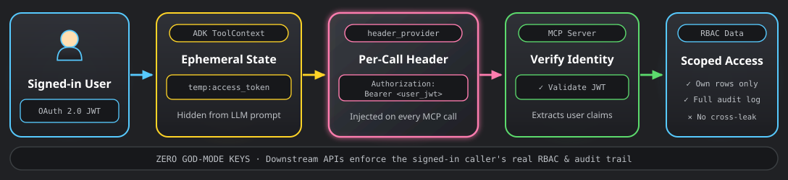
def user_oauth_headers(ctx: ReadonlyContext) -> dict[str, str]:
token = ctx.state.get("temp:user_access_token")
return {"Authorization": f"Bearer {token}"} if token else {}
secure_mcp = McpToolset(
connection_params=StreamableHTTPConnectionParams(
url="https://crm-mcp.run.app/mcp",
),
header_provider=user_oauth_headers,
)
Interactive consent
tool_context.request_credential() for OAuth flows.Real RBAC & audit
temp: state or a credential manager — never hardcode in prompts.Deploy MCP server and ADK agent on Cloud Run
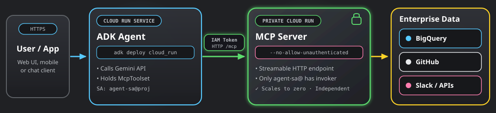
Cloud Run
ADK Agent
Private MCP
IAM Invoker
BigQuery
GitHub
Slack
--no-allow-unauthenticated and grant roles/run.invoker only to the agent's service account.
Tool design & security checklist
- ✓Keep toolsets lean (5–15 tools). Always use
tool_filteron broad MCP servers. - ✓Return structured dicts with
statusand actionable error messages for Gemini. - ✓Set explicit timeouts on
McpToolsetand recover viaon_tool_error_callback. - ✓Gate destructive actions with
before_tool_callbackorLongRunningFunctionTool.
- ✓Pass through user OAuth / IAM instead of sharing one high-privilege API key.
- ✓Pin trusted MCP servers. Treat third-party MCP servers like production dependencies.
- !Beware tool poisoning: untrusted MCP descriptions & outputs can carry prompt injections.
- !Separate built-in tools from custom tools into their own sub-agent or
AgentTool.
Connect, Extend, Ground
1 · Connect
Start with typed Python functions & crisp docstrings. Reuse OpenAPI specs and built-in grounding tools.
2 · Extend
Replace N×M glue with MCP. Plug local or cloud servers into ADK via McpToolset & tool_filter.
3 · Ground
Pair live MCP tools with Memory, enforce per-user OAuth, and deploy cleanly on Cloud Run.
McpToolset.Read more and try it
ADK Tools overview
adk.dev/tools/MCP Tools in ADK
adk.dev/tools-custom/mcp-tools/Model Context Protocol
modelcontextprotocol.ioCodelab: MCP on Cloud Run
Deploy a secure MCP server on Cloud RunCodelab: Multi-Tool Agents
Google Codelabs · ADK & MCPADK Python Samples
github.com/google/adk-samplesThank you
Q & A
Punsiri Boonyakiat
Google Developer Expert in Cloud AI
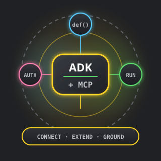